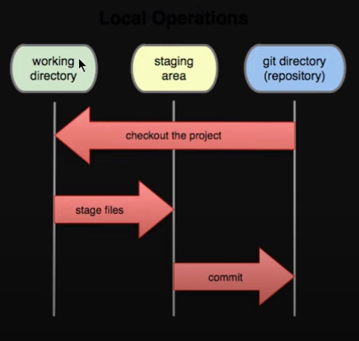

Git & GitHub
Git is a free and open source distributed version control system designed to handle everything from small to very large projects with speed and efficiency.
Working flow of Git: working directory ---> Staging area ---> Git Repository

- When local repository is not added to git repository
- Add your local directory into git repo by "git init"
*after this command a hidden file is created with name .git
- After adding local directory into git repo, we can check the status of files by "git status"
- After adding local directory into git repo
- Before doing commit we need to do staging: git add
- After staging we can do commit: git commit -m "commit message"
- After doing commit we can check the status of files by "git status"
- After doing commit we can check the log of commits by "git log"